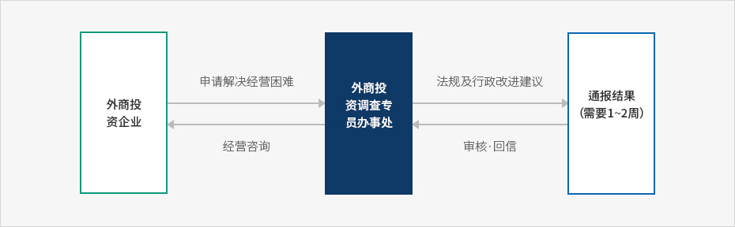
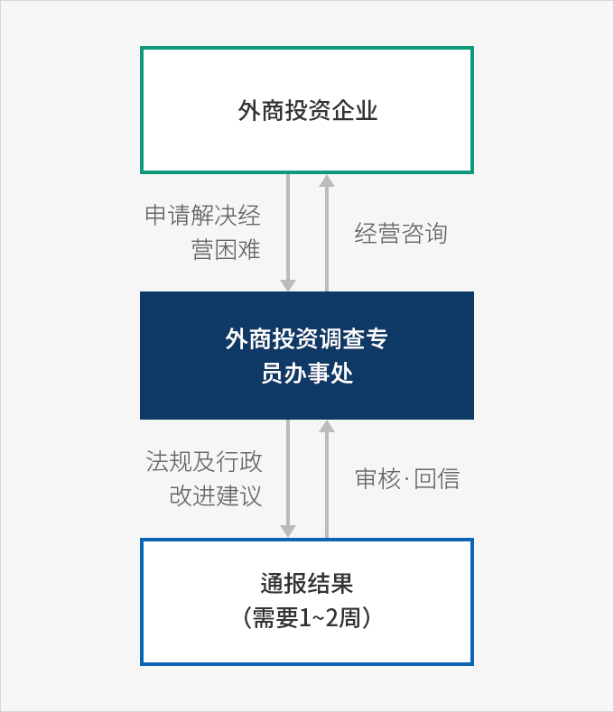

外商投资调查专员
- Home
- IK服务
- IK简介
- 外商投资调查专员
外商投资调查专员职能及权限
委任及职能
外商投资调查专员在经过产业通商资源部长官提请和外商投资委员会审议后，由总统委任。外商投资调查专员负责调查、处理外国投资商及外商投资企业的困难事项，制定外商投资制度改善方案，向有关行政机构和公共机构提出履行建议，以及处理外国投资商及外商投资企业的困难事项所必要的各种业务。权限
-
外商投资调查专员为处理外国投资商及外商投资企业的困难事项，必要时可向有关行政机构及有关机构负责人请求提供下列必要协助。此时，接到请求的相关行政机构等负责人，无特别理由，必须提供协助。
- 提交有关行政机构等的说明或总统令规定的相关资料
- 相关员工·利害关系人等的意见陈述
- 协助现场访问
- 外商投资调查专员根据外国投资商及外商投资企业的困难事项处理结果，必要时可建议相关行政机构及公共机构负责人改善相关事项。
※ 相关规定：《外商投资促进法》第15条之2第3项、第4项
信访机构和家庭医生制度
信访机构
KOTRA设立信访机构以支持外商投资调查专员工作，信访机构负责人为外商投资调查专员。信访机构的负责人（外商投资调查专员）可向相关行政机构或有关机构提出协助请求，以处理外国投资商和外商投资企业的困难事项。该情况下，接到协助请求的机构应在7天内通报请求协助事件的处理结果或意见。※ 相关规定：《外商投资促进法实施令》第21条之4第3
家庭医生（Homed doctor）制度
为有效处理外国投资商及外商投资企业的困难事项，为各地区、各投资企业配置专门的家庭医生（信访专员）。- 支持领域：劳务/人事、税收/税务、环境、金融/外汇、关税/通关、建设、IT&知识产权、居住环境等
信访程序
外国投资商或外商投资企业的困难事项信访流程如下:
- 拨打专员（家庭医生）电话、现场访问、在线方式、发送电邮等。
- 接到申诉后，负责的专员审核相关信访内容，如有相应相关机构，将联系该机构寻求解决方案。
- 信访事项录入KOTRA顾客管理系统（SCRM）进行管理，已结处理问题将通报给相关企业后结束服务。
※ 来源：2018年外商投资调查专员年度报告（2019.4）
信访流程



- 外商投资企业(申请解决经营困难)
- 外商投资调查专员办事处(法規及行政改进建议)
- 通报结果(需要1~2周, 审核·回信)
- 外商投资调查专员办事处(经营咨询)
- 外商投资企业

外商投资相关规定信息服务
外商投资调查专员办事处设立“外商投资相关规定信息服务“这一在线服务，以配合国务调整室，共同收集及反映在规定立法过程中被排除在外的外商投资企业的现场意见。该服务提供政府及国会制定的外商投资相关规定英文版，并向相关部门转达外商投资企业的意见。
服务内容
| 类别 | 服务内容 |
|---|---|
| 政府立法 | 提供政府相关新增规定及强化法案（实施令、实施规则）英文翻译和摘要 |
| 政府立法- 收集外商投资企业对相关法案的意见反馈，翻译英文并转达政府负责部门 | |
| 议员立法 | 提供议会相关新增规定及强化法案（实施令、实施规则）英文翻译和摘要 |
| 议员立法- 收集外商投资企业对相关法案的意见反馈，翻译英文并转达政府负责部门/议会负责人 | |
| 规定改革登闻鼓 (建议改进现有规章制度) |
收集现有规定实施过程中的相关建议事项，并转达政府有关部门的答复 |